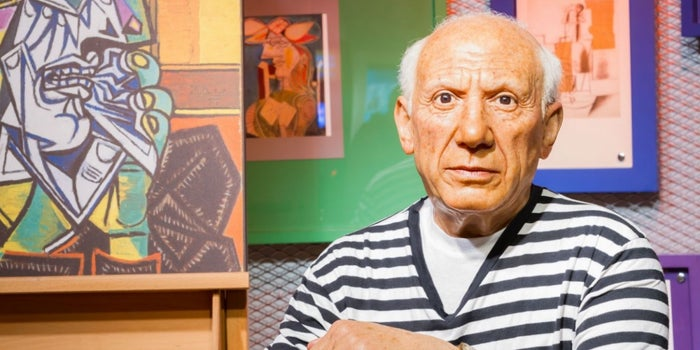

Pablo Picasso
En 1897 presentó el lienzo Ciencia y caridad (Museo Picasso, Barcelona) en la Exposición General
de Bellas Artes de Madrid. Durante el verano pasó, una vez más, sus vacaciones en Málaga, donde
pintó paisajes y corridas de toros. En septiembre, marchó a Madrid para iniciar estudios en la
Academia de San Fernando, pero pronto abandonó la Academia: la atmósfera intelectual de la capital,
impermeable al modernismo catalán que Picasso intentaba introducir (fundó una pequeña revista en 1901,
Arte Joven, que tuvo una existencia bastante breve) no le convencía. No obstante, aprovechó sus
frecuentes visitas al Museo del Prado para conocer mejor la obra del Greco, que era vindicada por
artistas y estudiosos de finales del siglo xix.
Desde 1898 firmó sus obras como «Pablo Ruiz Picasso», luego como «Pablo R. Picasso», y solo como
«Picasso» desde 1901. El cambio no parece implicar un rechazo de la figura paterna; antes bien
obedecía al deseo de Picasso de distinguirse como personaje, iniciado por sus amigos catalanes,
que tomaron la costumbre de llamarlo por el apellido materno, mucho menos corriente que el Ruiz
paterno.